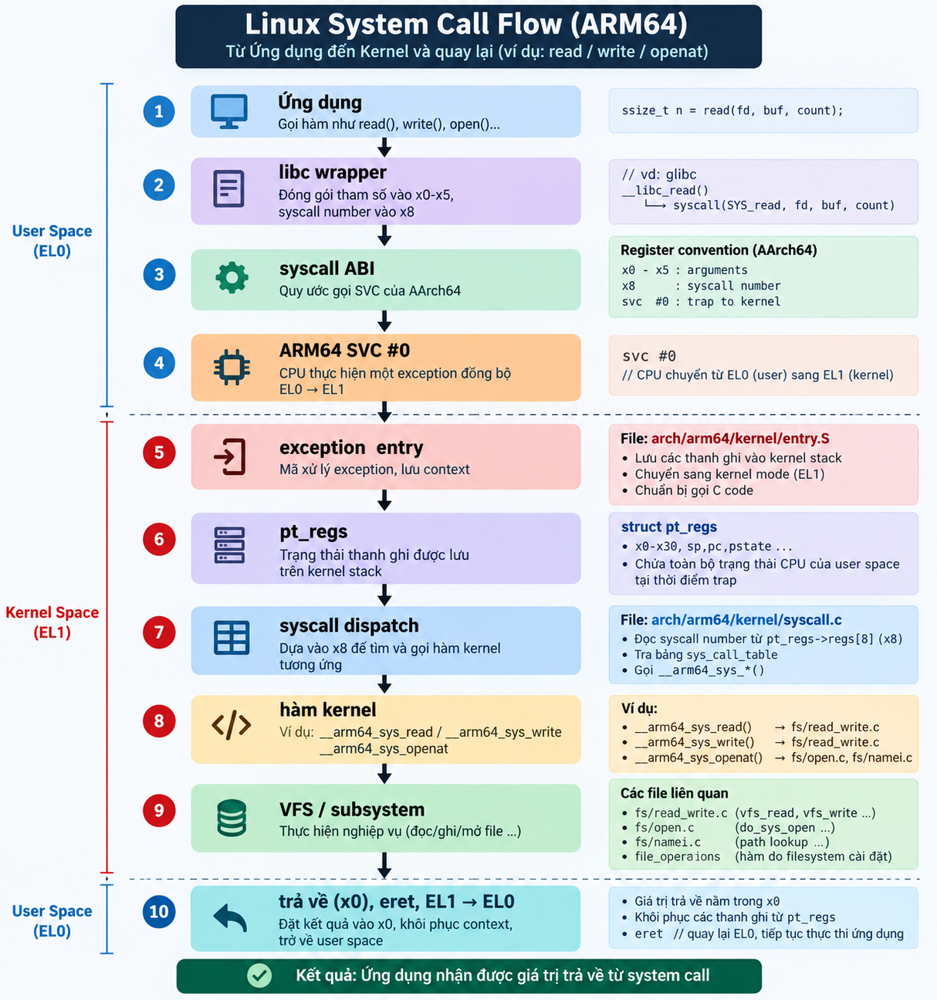
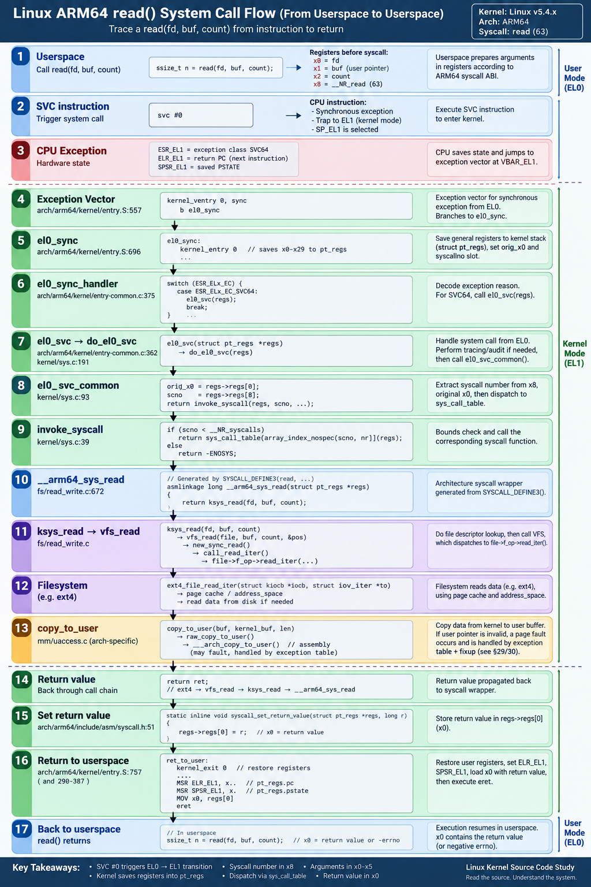
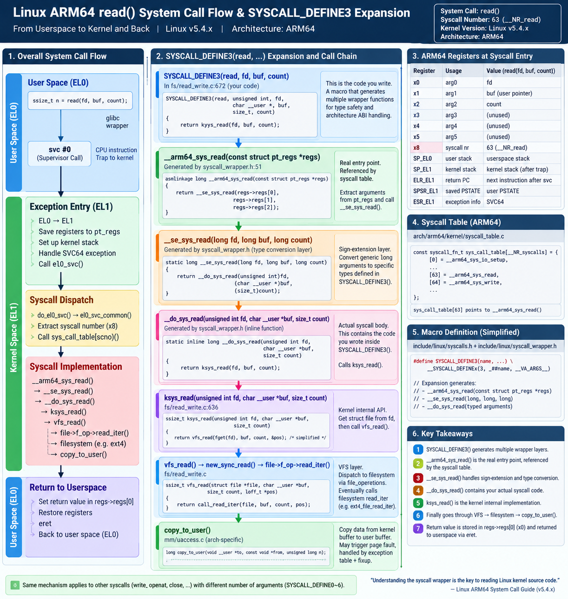
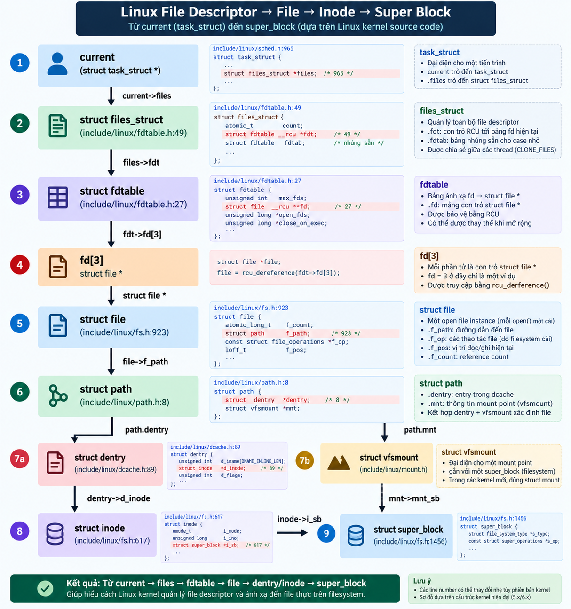
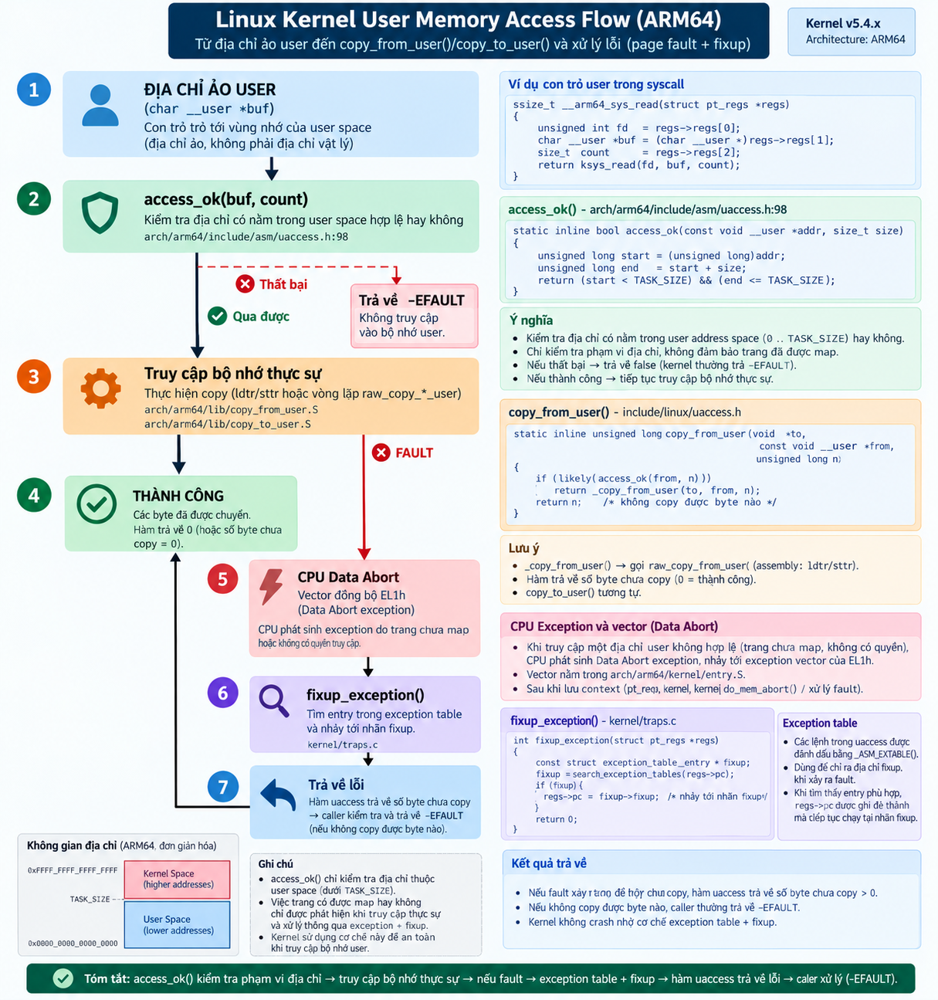
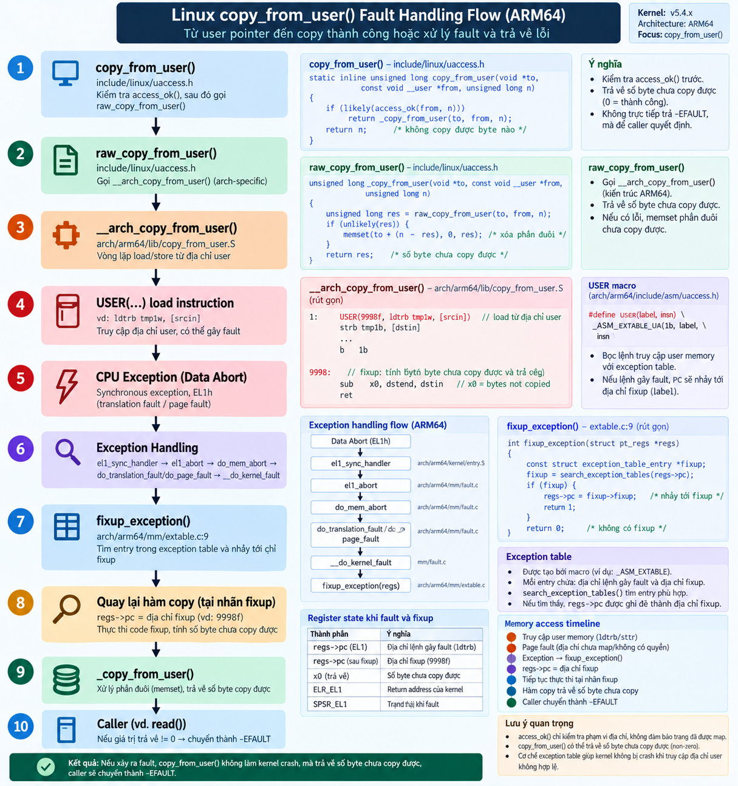
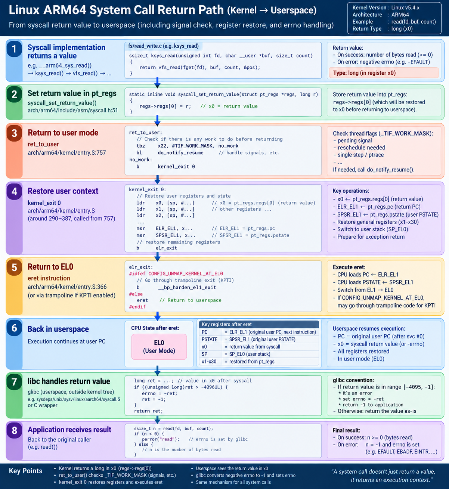
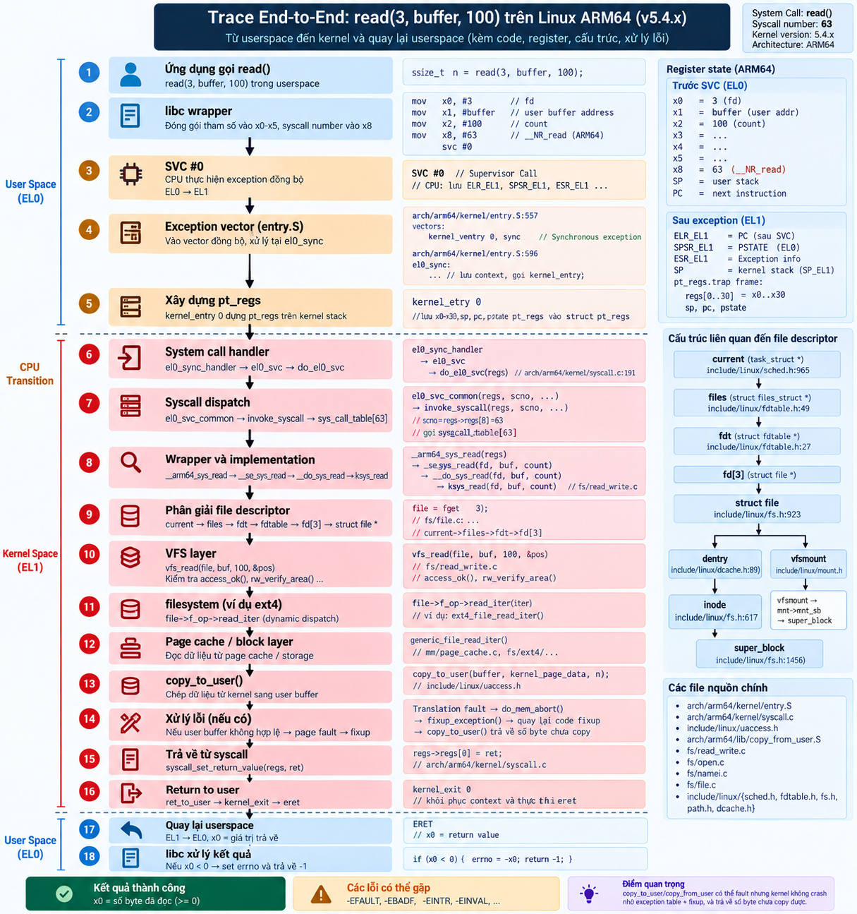

SYSTEM CALL
01 · Tổng quan
System call là ranh giới được kiểm soát giữa một tiến trình userspace không có đặc quyền (EL0) và kernel (EL1). Tài liệu này không giải thích lại lý thuyết đó dài dòng — mục đích của nó là để bạn tự mở source code Linux kernel thật và trace từng dòng lệnh, xem điều gì thực sự xảy ra khi một tiến trình gọi read(3, buffer, 100);.

Mỗi khẳng định trong tài liệu này đều được gắn nhãn:
🔵 ARM64 đặc thù kiến trúc 🟢 GENERIC code kernel độc lập kiến trúc 🟡 X86-ONLY chỉ áp dụng cho ví dụ x86 cũ trong sách 🟣 VFS lớp filesystem 🟠 MM quản lý bộ nhớ 🔴 SYSCALL hạ tầng syscall 🟪 VENDOR patch riêng của vendor/board, không phải upstream ⚠ NOT VERIFIED không thể xác nhận trong tree này
Ghi chú về Version & Source Tree
Chapter 10 và yêu cầu nghiên cứu ban đầu nhắm tới Linux v5.4.x. Source tree kernel thực sự có trên máy này
(C:\Users\PC\Documents\IT6_Kernel\Kernel\K-S800\Src) được xác nhận qua Makefile ở gốc là:
VERSION = 5 PATCHLEVEL = 10 SUBLEVEL = 241
tức là Linux v5.10.241, kiến trúc arm64. Theo nguyên tắc nghiên cứu "dùng ĐÚNG version của source tree được cung cấp, không được âm thầm thay thế", toàn bộ tài liệu này được viết dựa trên v5.10.241, không phải v5.4.x. Ở bất kỳ chỗ nào hành vi của v5.4.x có thể khác, nó sẽ được đánh dấu rõ là CHANGED.
Bằng chứng từ source code (config symbol, comment ticket, syscall được thêm vào) cho thấy tree này là một board-support package (BSP) của vendor, có vẻ dành cho một sản phẩm máy in đa năng "bizhub" của Konica Minolta (macro guard CONFIG_KM_BIZHUB, tham chiếu ticket như OP_BTS-38744, tag board K-S800). Nó đắp thêm các patch hành vi thật lên trên v5.10.241 gốc. Các patch này được đánh dấu inline xuyên suốt tài liệu bằng 🟪 VENDOR và được tổng hợp tại Vendor BSP Deltas. Chúng thực sự quan trọng: ít nhất một patch thay đổi hành vi khi copy_to_user() thất bại (gửi SIGSEGV thay vì trả về số byte chưa copy được ở một nhánh code), và hai syscall tùy biến làm dịch chuyển __NR_syscalls từ giá trị gốc lên 443.
02 · Bảng Ánh Xạ Chapter 10 → Linux Hiện Đại
| Khái niệm Chapter 10 | Khái niệm Linux hiện đại | Symbol trên Linux v5.10.241 ARM64 | Source File | Trạng thái | Ghi chú |
|---|---|---|---|---|---|
| POSIX API | libc wrapper bọc quanh một syscall | read(), write(), openat() (glibc) | (ngoài kernel tree) | STILL VALID | libc đặt tham số vào x0-x5, syscall # vào x8, thực thi svc #0. |
| System Call Handler | Exception vector + bộ dispatch bằng C | el0_sync → el0_sync_handler → el0_svc | arch/arm64/kernel/entry.S:696; entry-common.c:375,362 | ARM64 | Entry point "system_call" của x86 trong sách được thay bằng chuỗi exception vector + handler của AArch64. |
| System Call Service Routine | Entry point được sinh ra cho từng syscall | __arm64_sys_read / __arm64_sys_write / __arm64_sys_openat | được sinh bởi macro SYSCALL_DEFINEn tại file .c của syscall | ARM64 | Tên gọi sys_read() trơn trong sách không tồn tại như symbol thực sự được dispatch trên arm64 — xem §08. |
| System Call Table | Mảng con trỏ hàm được đánh chỉ số theo syscall number | sys_call_table[__NR_syscalls] | arch/arm64/kernel/sys.c:58 | ARM64 | Xác nhận thực sự tồn tại và được dùng — xem §06/§07. |
| System Call Number | Hằng số __NR_*, truyền qua thanh ghi | x8 → pt_regs->syscallno | include/uapi/asm-generic/unistd.h; arch/arm64/kernel/syscall.c:98 | ARM64 | eax của x86 trong sách chính là x8 của ARM64. |
| Vào/Ra System Call | svc #0 / eret | macro kernel_entry / kernel_exit | arch/arm64/kernel/entry.S | ARM64 | int $0x80/sysenter trong sách → ARM64 svc #0/eret. |
| Truyền tham số | Qua thanh ghi, không qua stack | x0-x5 = tham số, x8 = syscall number | arch/arm64/include/asm/syscall.h:66-74 | ARM64 | Các thanh ghi x86 ebx,ecx,edx,esi,edi,ebp trong sách tương ứng về mặt khái niệm với x0-x5 của ARM64. |
| Truy cập User Address Space | access_ok() + các hàm copy | __range_ok() | arch/arm64/include/asm/uaccess.h:56-99 | ARM64 | Vẫn là một phép kiểm tra range thật với addr_limit ở version này — không phải hàm rỗng. |
get_user() | Macro đọc một giá trị đơn từ user | __get_user → __get_user_error → __get_user_asm | arch/arm64/include/asm/uaccess.h:258-331 | ARM64 | Inline asm + cơ chế fixup qua exception table, không phải một lời gọi hàm thông thường. |
put_user() | Macro ghi một giá trị đơn xuống user | __put_user → __put_user_asm | arch/arm64/include/asm/uaccess.h:333-404 | ARM64 | Đối xứng với get_user. |
copy_from_user() | Copy hàng loạt user→kernel | _copy_from_user → raw_copy_from_user → __arch_copy_from_user | include/linux/uaccess.h:151-164; arch/arm64/lib/copy_from_user.S | GENERIC+ARM64 | Zero-fill phần đuôi đích khi copy thất bại/không trọn vẹn (uaccess.h:161-162). |
copy_to_user() | Copy hàng loạt kernel→user | _copy_to_user → raw_copy_to_user → __arch_copy_to_user | include/linux/uaccess.h:170-182; arch/arm64/lib/copy_to_user.S | GENERIC+ARM64 | VENDOR trong đường đi iov_iter của tree này — xem Vendor Deltas. |
access_ok() | Kiểm tra hợp lệ range của con trỏ user | macro __range_ok() | arch/arm64/include/asm/uaccess.h:63-98 | ARM64 | Phép toán carry-flag không nhánh rẽ, so với current_thread_info()->addr_limit. |
| Page Fault | Exception data/instruction abort | do_mem_abort(), do_translation_fault(), do_page_fault() | arch/arm64/mm/fault.c:725; 604; 456 | ARM64 | Khái niệm "page fault handler" của x86 trong sách ánh xạ sang bảng dispatch fault dựa trên ESR_EL1 của ARM64. |
| Exception Table | Bảng đã sắp xếp các cặp (lệnh-gây-fault, fixup) | struct exception_table_entry {int insn, fixup;} | arch/arm64/include/asm/extable.h:18-21 | ARM64 | Cơ chế offset tương đối đơn giản trên v5.10 arm64 — KHÔNG phải cơ chế handler có kiểu (EX_TYPE_*) mà một số kernel mới hơn dùng. |
| Fixup Code | Lệnh phục hồi nằm ngoài dòng chính | fixup_exception(), section .fixup, macro USER() | arch/arm64/mm/extable.c:9-22; asm/assembler.h:132-141 | ARM64 | Ghi đè regs->pc thành địa chỉ fixup thay vì nhảy bằng phần cứng. |
| Kernel Wrapper | Bộ sinh entry syscall đặc thù kiến trúc | __SYSCALL_DEFINEx riêng của arm64 | arch/arm64/include/asm/syscall_wrapper.h:51-73 | ARM64 | Ghi đè macro generic trong include/linux/syscalls.h — xem §08. |
| System Call Return | Giá trị trả về nằm trong thanh ghi, rồi eret | syscall_set_return_value() ghi vào regs->regs[0]; kernel_exit thực thi eret | arch/arm64/include/asm/syscall.h:51-62; entry.S:290-387 | ARM64 | Giá trị trả về âm trở thành -errno; libc đảo dấu và lưu vào errno — kernel không bao giờ trực tiếp đụng vào errno phía userspace. |
03 · Bức Tranh Tổng Thể của System Call
Luồng thực thi end-to-end đã được xác nhận bằng source code, cho read(3, buffer, 100) trên tree v5.10.241 arm64 này (mỗi mũi tên đều có trích dẫn ở các phần tiếp theo):

04 · ARM64 Exception Entry
pt_regs, dispatch, sys_call_table — đều là phần mềm thuần túy, viết trong entry.S/entry-common.c/syscall.c.Các thanh ghi CPU liên quan
| Thanh ghi | Ý nghĩa | Được thiết lập bởi |
|---|---|---|
ELR_EL1 | Exception Link Register — PC để quay về | Phần cứng CPU, khi vào exception (giữ địa chỉ lệnh ngay sau svc #0) |
SPSR_EL1 | Saved Program Status Register — PSTATE tại thời điểm xảy ra exception | Phần cứng CPU |
ESR_EL1 | Exception Syndrome Register — lý do xảy ra exception (trường EC, vd. ESR_ELx_EC_SVC64) | Phần cứng CPU |
VBAR_EL1 | Vector Base Address Register — địa chỉ gốc của bảng vector exception gồm 16 mục | Linux, thiết lập một lần lúc boot: __primary_switched |
SP_EL0 / SP_EL1 | Con trỏ stack riêng theo từng exception level | CPU tự động chuyển khi đổi EL; kernel_entry còn hoán đổi thêm sp_el0↔task struct |
SYM_FUNC_START_LOCAL(__primary_switched) ... adr_l x8, vectors // nạp VBAR_EL1 bằng địa chỉ ảo msr vbar_el1, x8 // của bảng vector isb
Bảng vector
Một lệnh svc #0 thực thi ở EL0 là một exception đồng bộ được đưa lên EL1 (chạy trên SP_EL1 / EL1h). Nó rơi vào slot "Synchronous 64-bit EL0" — slot thứ 8 trong 16 slot, mỗi slot 128 byte.
.align 11 SYM_CODE_START(vectors) kernel_ventry 1, sync_invalid // Synchronous EL1t kernel_ventry 1, irq_invalid // IRQ EL1t kernel_ventry 1, fiq_invalid // FIQ EL1t kernel_ventry 1, error_invalid // Error EL1t kernel_ventry 1, sync // Synchronous EL1h ← fault ở chế độ kernel, kể cả fault uaccess (§29) kernel_ventry 1, irq // IRQ EL1h kernel_ventry 1, fiq_invalid // FIQ EL1h kernel_ventry 1, error // Error EL1h kernel_ventry 0, sync // Synchronous 64-bit EL0 ← SVC #0 rơi vào đây kernel_ventry 0, irq // IRQ 64-bit EL0 kernel_ventry 0, fiq_invalid // FIQ 64-bit EL0 kernel_ventry 0, error // Error 64-bit EL0
el1_ignore của vendor dưới cờ CONFIG_IGNORE_ASYNC_ABORT (entry.S:566-570) — không có trong mainline v5.10.kernel_entry: lưu thanh ghi vào pt_regs
kernel_ventry 0, sync nhảy tới el0_sync, chạy ngay macro kernel_entry — đây chính là thời điểm x0-x29 trở thành các trường của pt_regs.
stp x0, x1, [sp, #16 * 0] stp x2, x3, [sp, #16 * 1] stp x4, x5, [sp, #16 * 2] stp x6, x7, [sp, #16 * 3] stp x8, x9, [sp, #16 * 4] stp x10, x11, [sp, #16 * 5] ... stp x28, x29, [sp, #16 * 14] ... .if \el == 0 mov w21, #NO_SYSCALL str w21, [sp, #S_SYSCALLNO] // pt_regs->syscallno đặt trước bằng -1 .endif
SYM_CODE_START_LOCAL_NOALIGN(el0_sync) kernel_entry 0 mov x0, sp bl el0_sync_handler b ret_to_user SYM_CODE_END(el0_sync)
Sau kernel_entry 0, sp trỏ tới gốc của struct pt_regs vừa được dựng. mov x0, sp truyền &pt_regs làm tham số đầu tiên (và duy nhất) vào hàm C el0_sync_handler(struct pt_regs *regs).
asmlinkage void noinstr el0_sync_handler(struct pt_regs *regs)
{
unsigned long esr = read_sysreg(esr_el1);
switch (ESR_ELx_EC(esr)) {
case ESR_ELx_EC_SVC64:
el0_svc(regs);
break;
...
static void noinstr el0_svc(struct pt_regs *regs)
{
enter_from_user_mode();
do_el0_svc(regs);
}Phần mềm Linux làm mọi thứ còn lại:
kernel_entry lưu các GPR vào pt_regs, el0_sync_handler đọc ESR_EL1 bằng C qua read_sysreg() rồi rẽ nhánh theo lớp exception.
05 · struct pt_regs
struct pt_regs {
union {
struct user_pt_regs user_regs;
struct {
u64 regs[31];
u64 sp;
u64 pc;
u64 pstate;
};
};
u64 orig_x0;
#ifdef __AARCH64EB__
u32 unused2;
s32 syscallno;
#else
s32 syscallno;
u32 unused2;
#endif
u64 orig_addr_limit;
u64 pmr_save; /* chỉ hợp lệ khi ARM64_HAS_IRQ_PRIO_MASKING */
u64 stackframe[2];
u64 lockdep_hardirqs; /* chỉ hợp lệ với một số exception EL1 */
u64 exit_rcu;
};Ánh xạ thanh ghi → trường pt_regs
| Thanh ghi | Trường pt_regs | Được thiết lập tại |
|---|---|---|
| x0 | regs[0] (sau đó là orig_x0) | kernel_entry stp (entry.S:189); orig_x0 = regs[0] trong el0_svc_common (syscall.c:98) |
| x1..x5 | regs[1..5] | chuỗi stp trong kernel_entry |
| x8 | regs[8], sau đó copy sang syscallno | stp trong kernel_entry; syscallno = scno trong el0_svc_common (syscall.c:99) |
| x29/x30 (FP/LR) | regs[28..29]/(LR xử lý riêng) | kernel_entry |
| — | pc | mrs x22, elr_el1 → lưu lại (entry.S ~235-257) |
| — | pstate | mrs x23, spsr_el1 → lưu lại |
Macro offset dùng trong asm
DEFINE(S_X0, offsetof(struct pt_regs, regs[0])); ... DEFINE(S_LR, offsetof(struct pt_regs, regs[30])); DEFINE(S_SP, offsetof(struct pt_regs, sp)); DEFINE(S_PSTATE, offsetof(struct pt_regs, pstate)); DEFINE(S_PC, offsetof(struct pt_regs, pc)); DEFINE(S_SYSCALLNO, offsetof(struct pt_regs, syscallno));
Các hằng S_* này chính là thứ entry.S thực sự dùng (vd. str w21, [sp, #S_SYSCALLNO]) — mã assembly không bao giờ hard-code offset byte.
regs[0] sẽ bị ghi đè bằng giá trị trả về của syscall trước khi eret (xem §32). orig_x0 giữ lại giá trị tham số gốc, phục vụ ptrace/audit/mã restart-syscall cần biết x0 trước khi syscall chạy.06 · Syscall Number & Table
Định nghĩa __NR_*
ARM64 dùng bảng đánh số syscall generic (xác nhận qua arch/arm64/include/asm/unistd.h:44-50 include <uapi/asm/unistd.h>, và file này include <asm-generic/unistd.h>).
#define __NR_openat 56 __SYSCALL(__NR_openat, sys_openat) ... #define __NR_read 63 __SYSCALL(__NR_read, sys_read) #define __NR_write 64 __SYSCALL(__NR_write, sys_write)
arch/arm64/include/uapi/asm/unistd.h của tree này thêm hai syscall riêng của board trước khi include bảng generic:
#ifdef CONFIG_KM_SEMAPHORE /* sky_kudo */ #define __NR_km_semaphore 441 __SYSCALL(__NR_km_semaphore, sys_km_semaphore) #endif #ifdef CONFIG_KM_TICK #define __NR_km_tickget 442 __SYSCALL(__NR_km_tickget, sys_km_tickget) #endif #include <asm-generic/unistd.h>
include/uapi/asm-generic/unistd.h:870-871 định nghĩa lại tổng số:
#undef __NR_syscalls #define __NR_syscalls 443
__NR_syscalls == 443, không phải giá trị generic gốc — phép kiểm tra biên trong invoke_syscall() (§07) dùng con số đã bị vendor chỉnh sửa này.
sys_call_table — đúng, nó có thật và được dùng trên ARM64
asmlinkage long sys_ni_syscall(void);
asmlinkage long __arm64_sys_ni_syscall(const struct pt_regs *__unused)
{
return sys_ni_syscall();
}
#undef __SYSCALL
#define __SYSCALL(nr, sym) asmlinkage long __arm64_##sym(const struct pt_regs *);
#include <asm/unistd.h>
#undef __SYSCALL
#define __SYSCALL(nr, sym) [nr] = __arm64_##sym,
const syscall_fn_t sys_call_table[__NR_syscalls] = {
[0 ... __NR_syscalls - 1] = __arm64_sys_ni_syscall,
#include <asm/unistd.h>
};<asm/unistd.h> được include hai lần, mỗi lần __SYSCALL được định nghĩa lại — lần đầu để khai báo trước (forward-declare) mọi prototype __arm64_sys_<tên>, lần sau để sinh ra initializer chỉ định [nr] = __arm64_sys_<tên>,. Đây thuần túy là phép thay thế macro dạng text tại thời điểm biên dịch — không có header nào được sinh riêng (thư mục arch/arm64/include/generated/ không tồn tại trong tree này), khác với script syscalltbl.sh chạy lúc build của x86.
typedef long (*syscall_fn_t)(const struct pt_regs *regs); extern const syscall_fn_t sys_call_table[];
Có một compat_sys_call_table riêng, xây dựng tương tự, dành cho task compat 32-bit — arch/arm64/kernel/sys32.c:132.
07 · Syscall Dispatch
static long __invoke_syscall(struct pt_regs *regs, syscall_fn_t syscall_fn)
{
return syscall_fn(regs);
}
static void invoke_syscall(struct pt_regs *regs, unsigned int scno,
unsigned int sc_nr,
const syscall_fn_t syscall_table[])
{
long ret;
if (scno < sc_nr) {
syscall_fn_t syscall_fn;
syscall_fn = syscall_table[array_index_nospec(scno, sc_nr)];
ret = __invoke_syscall(regs, syscall_fn);
} else {
ret = do_ni_syscall(regs, scno);
}
syscall_set_return_value(current, regs, 0, ret);
}array_index_nospec() là một chốt chặn cứng hóa chống Spectre-v1: dù scno < sc_nr đã được kiểm tra, hàm này vẫn ép chỉ số dùng để truy cập bộ nhớ thực sự phải nằm trong biên, vô hiệu hóa việc đọc ngoài biên sys_call_table bằng thực thi suy đoán (speculative execution). Một scno ngoài biên — kể cả một số thực sự sai hoặc giá trị đặc biệt "bỏ qua syscall" của ptrace — sẽ rơi vào do_ni_syscall(), hàm này trả về -ENOSYS thông qua sys_ni_syscall().
static void el0_svc_common(struct pt_regs *regs, int scno, int sc_nr,
const syscall_fn_t syscall_table[])
{
unsigned long flags = current_thread_info()->flags;
regs->orig_x0 = regs->regs[0];
regs->syscallno = scno;
...
void do_el0_svc(struct pt_regs *regs)
{
sve_user_discard();
el0_svc_common(regs, regs->regs[8], __NR_syscalls, sys_call_table);
}do_el0_svc_compat() (syscall.c:198-202) dùng thanh ghi x7, không phải x8, làm thanh ghi chứa syscall number, theo đúng ABI của AArch32 — một khác biệt kiến trúc thực sự đáng nhớ nếu bạn trace một tiến trình compat (32-bit).08 · SYSCALL_DEFINE3 — Khai Triển Macro
Chuỗi macro generic
#define SYSCALL_DEFINE3(name, ...) SYSCALL_DEFINEx(3, _##name, __VA_ARGS__) ... #define SYSCALL_DEFINEx(x, sname, ...) \ SYSCALL_METADATA(sname, x, __VA_ARGS__) \ __SYSCALL_DEFINEx(x, sname, __VA_ARGS__)
Macro fallback generic __SYSCALL_DEFINEx (nếu dùng sẽ sinh ra một sys_name() kiểu x86 trơn) chỉ áp dụng khi #ifndef __SYSCALL_DEFINEx. Nhưng syscalls.h:94 include <asm/syscall_wrapper.h> trước khi tới được điều kiện guard đó — nên trên arm64, phiên bản riêng của kiến trúc sẽ thắng.
Bản ghi đè của ARM64
#define __SYSCALL_DEFINEx(x, name, ...) \
asmlinkage long __arm64_sys##name(const struct pt_regs *regs); \
ALLOW_ERROR_INJECTION(__arm64_sys##name, ERRNO); \
static long __se_sys##name(__MAP(x,__SC_LONG,__VA_ARGS__)); \
static inline long __do_sys##name(__MAP(x,__SC_DECL,__VA_ARGS__)); \
asmlinkage long __arm64_sys##name(const struct pt_regs *regs) \
{ \
return __se_sys##name(SC_ARM64_REGS_TO_ARGS(x,__VA_ARGS__)); \
} \
static long __se_sys##name(__MAP(x,__SC_LONG,__VA_ARGS__)) \
{ \
long ret = __do_sys##name(__MAP(x,__SC_CAST,__VA_ARGS__)); \
__MAP(x,__SC_TEST,__VA_ARGS__); \
__PROTECT(x, ret,__MAP(x,__SC_ARGS,__VA_ARGS__)); \
return ret; \
} \
static inline long __do_sys##name(__MAP(x,__SC_DECL,__VA_ARGS__))
#define SC_ARM64_REGS_TO_ARGS(x, ...) \
__MAP(x,__SC_ARGS \
,,regs->regs[0],,regs->regs[1],,regs->regs[2] \
,,regs->regs[3],,regs->regs[4],,regs->regs[5])Thứ thực sự được sinh ra cho read()
SYCALL_DEFINE3(read, unsigned int, fd, char __user *, buf, size_t, count)
{
return ksys_read(fd, buf, count);
}
__SYSCALL_DEFINEx generic (thứ sẽ sinh ra một hàm sys_read() trơn) không bao giờ được dùng, vì phiên bản riêng của arm64 được ưu tiên hơn nhờ thứ tự include. Một prototype asmlinkage long sys_read(...) vẫn tồn tại như một khai báo cho các nơi khác gọi tới (include/linux/syscalls.h:493), nhưng macro chỉ định nghĩa __arm64_sys_read / __se_sys_read / __do_sys_read. Nếu bạn grep binary hoặc System.map tìm sys_read, bạn sẽ không tìm thấy đoạn code thực sự chạy — hãy tìm __arm64_sys_read.
asmlinkage và __user
asmlinkage
#ifdef __cplusplus #define CPP_ASMLINKAGE extern "C" #else #define CPP_ASMLINKAGE #endif #ifndef asmlinkage #define asmlinkage CPP_ASMLINKAGE #endif
asm/linkage.h riêng của arm64 không định nghĩa lại macro này, nên trên arm64 asmlinkage đơn giản là rỗng (hoặc extern "C") — khác với các kiến trúc lịch sử từng dùng nó để ép một quy ước gọi hàm dựa trên stack cụ thể.
__user
#else /* __CHECKER__ */ # define __kernel # ifdef STRUCTLEAK_PLUGIN # define __user __attribute__((user)) # else # define __user # endif
Trong một bản build bình thường nó biến mất hoàn toàn — nó tồn tại thuần túy để phục vụ phân tích tĩnh (đường __CHECKER__ của sparse định nghĩa nó thành __attribute__((noderef, address_space(__user)))) để sparse có thể bắt lỗi một con trỏ kernel thô bị dereference như thể nó là user memory.
__SC_COMP không tồn tại trong include/linux/syscalls.h hay arch/arm64/include/asm/syscall_wrapper.h trong tree này. Tương đương cho compat là COMPAT_SYSCALL_DEFINEx (syscall_wrapper.h:20-33), sinh ra __arm64_compat_sys_name/__se_compat_sys_name/__do_compat_sys_name dùng cùng kỹ thuật ánh xạ thanh ghi.10 · read() — Trace Source Đầy Đủ
read(fd, buf, count) — case study chính. Mỗi bước dưới đây là một hàm có thật trong tree này, tại đúng file/dòng được trích dẫn.
Userspace
Tiến trình đang giữ một fd đã mở (vd. fd=3) và gọi read(3, buffer, 100) của libc.
libc wrapper
glibc đặt fd vào x0, buffer vào x1, 100 vào x2, và __NR_read (63) vào x8, rồi thực thi svc #0. (nằm ngoài kernel tree — không trích dẫn thêm.)
ARM64 Exception Entry → pt_regs → Dispatch
Xem đầy đủ tại §04-§07. Kết quả: invoke_syscall() gọi sys_call_table[63] = __arm64_sys_read.
__arm64_sys_read → __do_sys_read → ksys_read
SYSCALL_DEFINE3(read, unsigned int, fd, char __user *, buf, size_t, count)
{
return ksys_read(fd, buf, count);
}Toàn bộ thân hàm ksys_read() (kèm ghi chú vòng lặp retry CONFIG_KM_BIZHUB của vendor)
ssize_t ksys_read(unsigned int fd, char __user *buf, size_t count)
{
struct fd f = fdget_pos(fd);
ssize_t ret = -EBADF;
if (f.file) {
loff_t pos, *ppos = file_ppos(f.file);
if (ppos) {
pos = *ppos;
ppos = &pos;
}
/* [VENDOR CONFIG_KM_BIZHUB: vòng lặp retry quanh vfs_read khi -EIO, đã lược bớt] */
ret = vfs_read(f.file, buf, count, ppos);
if (ret >= 0 && ppos)
f.file->f_pos = pos;
fdput_pos(f);
}
return ret;
}Caller: __arm64_sys_read (được sinh ra). Callee: fdget_pos(), vfs_read(), fdput_pos(). Nếu fdget_pos() trả về f.file là NULL (fd sai), giá trị khởi tạo ret = -EBADF ở đầu sẽ được giữ nguyên và trả về — đây chính xác là nguồn gốc lỗi EBADF của read(2).
fd → struct file: fdget_pos()
struct fd {
struct file *file;
unsigned int flags;
};
...
static inline struct fd fdget(unsigned int fd)
{ return __to_fd(__fdget(fd)); }
static inline struct fd fdget_pos(int fd)
{ return __to_fd(__fdget_pos(fd)); }Cài đặt hiện thực, fs/file.c:1322-1382: __fget_light() đi theo đường nhanh, không cần tăng refcount, nếu task chỉ có một luồng (files->count == 1) dùng files_lookup_fd_raw(); ngược lại rơi về __fget(), hàm này thực sự lấy một tham chiếu qua get_file() và gắn cờ FDPUT_FPUT để fdput() tương ứng biết cần gọi fput(). fdget_pos() còn khóa thêm file->f_pos_lock khi file cần khóa vị trí đọc/ghi (fd dùng chung hoặc là thư mục).
vfs_read()
ssize_t vfs_read(struct file *file, char __user *buf, size_t count, loff_t *pos)
{
ssize_t ret;
if (!(file->f_mode & FMODE_READ))
return -EBADF;
if (!(file->f_mode & FMODE_CAN_READ))
return -EINVAL;
if (unlikely(!access_ok(buf, count)))
return -EFAULT;
ret = rw_verify_area(READ, file, pos, count);
if (ret)
return ret;
if (count > MAX_RW_COUNT)
count = MAX_RW_COUNT;
if (file->f_op->read)
ret = file->f_op->read(file, buf, count, pos);
else if (file->f_op->read_iter)
ret = new_sync_read(file, buf, count, pos);
else
ret = -EINVAL;
if (ret > 0) {
fsnotify_access(file);
add_rchar(current, ret);
}
inc_syscr(current);
return ret;
}Đã xác nhận trong tree v5.10.241 này: cả hai kiểu file_operations trực tiếp (f_op->read) lẫn kiểu iter (f_op->read_iter) đều được hỗ trợ song song — việc gỡ bỏ thành viên trực tiếp chỉ xảy ra ở một version kernel sau này. Chú ý lời gọi access_ok(buf, count) ngay tại đây, ở lớp VFS, trước khi chạm vào filesystem (§25).
new_sync_read() → call_read_iter() → f_op->read_iter
static ssize_t new_sync_read(struct file *filp, char __user *buf, size_t len, loff_t *ppos)
{
struct iovec iov = { .iov_base = buf, .iov_len = len };
struct kiocb kiocb;
struct iov_iter iter;
ssize_t ret;
init_sync_kiocb(&kiocb, filp);
kiocb.ki_pos = (ppos ? *ppos : 0);
iov_iter_init(&iter, READ, &iov, 1, len);
ret = call_read_iter(filp, &kiocb, &iter);
BUG_ON(ret == -EIOCBQUEUED);
if (ppos)
*ppos = kiocb.ki_pos;
return ret;
}static inline ssize_t call_read_iter(struct file *file, struct kiocb *kio,
struct iov_iter *iter)
{
return file->f_op->read_iter(kio, iter);
}Đây chính là nơi một dải byte phẳng đơn giản (buf, count) được bọc thành một struct iov_iter một-đoạn, để có thể đi qua cùng giao diện read_iter mà I/O có vector (readv) và io_uring cũng dùng.
Filesystem — ví dụ cụ thể: ext4
const struct file_operations ext4_file_operations = {
.llseek = ext4_llseek,
.read_iter = ext4_file_read_iter,
.write_iter = ext4_file_write_iter,
.iopoll = iomap_dio_iopoll,
.unlocked_ioctl = ext4_ioctl,
.mmap = ext4_file_mmap,
.open = ext4_file_open,
.release = ext4_release_file,
.fsync = ext4_sync_file,
.splice_read = generic_file_splice_read,
.splice_write = iter_file_splice_write,
};ext4_file_read_iter() (fs/ext4/file.c:118) kiểm tra tình trạng forced shutdown rồi ủy quyền cho các đường đi DAX/direct-I/O/buffered, cuối cùng chạm tới page cache qua generic_file_read_iter(). Đây là dynamic dispatch qua con trỏ hàm thực sự, được thiết lập tại thời điểm đăng ký filesystem — xem cơ chế chung ở §23.
copy_to_user() — page cache → buffer userspace
Sâu bên trong đường đi page-cache read, các byte được đưa vào buffer đích thông qua copy_to_user() → raw_copy_to_user() → __arch_copy_to_user (assembly arm64). Trace đầy đủ tại §25/§29/§30 (truy cập user, page fault, exception table). Trong tree vendor này, đường copy-out của lib/iov_iter.c đã bị patch — xem callout bên dưới và mục "Vendor BSP Deltas".
copy_page_to_iter_iovec() của mainline v5.10 gọi một hàm phụ tên copyout() (vẫn còn đó, lib/iov_iter.c:179-188, không bị sửa) — nhưng trong tree này các nơi gọi nó đã bị thay bằng một hàm vendor __copy_to_user_chk() (lib/iov_iter.c:146-177, ticket OP_BTS-38744), hàm này vẫn làm access_ok()+raw_copy_to_user() như cũ nhưng gửi thẳng SIGSEGV cho task hiện tại khi thất bại, thay vì trả về số byte chưa copy được để caller tự chuyển thành -EFAULT. Đây là một khác biệt hành vi thật sự, có ý nghĩa — cần biết trước khi bạn trông đợi read(2) trả về -EFAULT cho một buffer sai trên chính board này.
Đường trả về
Giá trị trả về của read_iter → call_read_iter → new_sync_read → vfs_read → ksys_read (cập nhật f_pos) → __do_sys_read → __se_sys_read → __arm64_sys_read → invoke_syscall → syscall_set_return_value() ghi vào regs->regs[0] → ret_to_user → kernel_exit → eret → x0 phía userspace. Chi tiết đầy đủ ở §32.
Locking trong đường đi read
vfs_read() không khóa gì cả — xác nhận bằng cách đọc toàn bộ thân hàm (fs/read_write.c:489-518): không có inode_lock/i_rwsem/mutex/semaphore nào xuất hiện trong đó hay trong new_sync_read(). Mọi khóa ở phía đọc là chuyện nội bộ của filesystem/lớp page-cache, không phải của entry point VFS chung.Tóm tắt error path của read()
| Điều kiện | Kiểm tra ở đâu | Trả về |
|---|---|---|
| fd sai/chưa mở | ksys_read, giá trị ret mặc định khi fdget_pos() trả NULL file | -EBADF |
| file không mở để đọc | vfs_read: !(f_mode & FMODE_READ) | -EBADF |
| loại file không đọc được (vd. file đặc biệt chỉ ghi) | vfs_read: !(f_mode & FMODE_CAN_READ) | -EINVAL |
| con trỏ/độ dài buffer không qua được kiểm tra range | vfs_read: !access_ok(buf, count) | -EFAULT |
| count/vị trí âm hoặc tràn số | rw_verify_area(), fs/read_write.c:379-415 | -EINVAL / -EOVERFLOW |
không có cả .read lẫn .read_iter | vfs_read | -EINVAL |
-ESPIPE và -EISDIR tồn tại ở nơi khác trong fs/read_write.c (nhóm syscall định vị pread64/sendfile, và generic_file_rw_checks() dùng bởi copy_file_range) nhưng không thể xảy ra qua ksys_read/vfs_read với một lời gọi read(2) thông thường — đã xác nhận bằng cách đọc trực tiếp source, không suy đoán.11 · write() — Trace Source
Về cấu trúc là hình ảnh phản chiếu của read(): __arm64_sys_write → ksys_write → vfs_write → new_sync_write → call_write_iter → f_op->write_iter.
ssize_t vfs_write(struct file *file, const char __user *buf, size_t count, loff_t *pos)
{
ssize_t ret;
if (!(file->f_mode & FMODE_WRITE))
return -EBADF;
if (!(file->f_mode & FMODE_CAN_WRITE))
return -EINVAL;
if (unlikely(!access_ok(buf, count)))
return -EFAULT;
ret = rw_verify_area(WRITE, file, pos, count);
if (ret)
return ret;
if (count > MAX_RW_COUNT)
count = MAX_RW_COUNT;
file_start_write(file);
if (file->f_op->write)
ret = file->f_op->write(file, buf, count, pos);
else if (file->f_op->write_iter)
ret = new_sync_write(file, buf, count, pos);
else
ret = -EINVAL;
if (ret > 0) {
fsnotify_modify(file);
add_wchar(current, ret);
}
inc_syscw(current);
file_end_write(file);
return ret;
}Khác biệt về locking so với read(): sb_start_write, không phải i_rwsem
vfs_write() bọc lời gọi bằng file_start_write()/file_end_write() — đây là bảo vệ chống đóng băng (freeze), không phải loại trừ lẫn nhau trên từng file:
static inline void file_start_write(struct file *file)
{
if (!S_ISREG(file_inode(file)->i_mode))
return;
sb_start_write(file_inode(file)->i_sb);
}
static inline void file_end_write(struct file *file)
{
if (!S_ISREG(file_inode(file)->i_mode))
return;
__sb_end_write(file_inode(file)->i_sb, SB_FREEZE_WRITE);
}Khóa loại trừ ghi thực sự trên từng file (inode->i_rwsem) được lấy ở một lớp bên dưới vfs_write, bên trong write_iter của filesystem — vd. generic_file_write_iter():
ssize_t generic_file_write_iter(struct kiocb *iocb, struct iov_iter *from)
{
struct file *file = iocb->ki_filp;
struct inode *inode = file->f_mapping->host;
ssize_t ret;
inode_lock(inode); /* down_write(&inode->i_rwsem) */
ret = generic_write_checks(iocb, from);
if (ret > 0)
ret = __generic_file_write_iter(iocb, from);
inode_unlock(inode);
if (ret > 0)
ret = generic_write_sync(iocb, ret);
return ret;
}ksys_write() (fs/read_write.c:677-750) trong tree này thêm, trước khi gọi vfs_write() chuẩn: (1) một vòng lặp retry -EIO dưới cờ CONFIG_KM_BIZHUB (dòng 730-743), và (2) một cơ chế chặn ghi bảo vệ MBR cho /dev/kmsda ở offset dưới 512 byte (dòng 695-729). Cả hai đều không có trong mainline v5.10 — cả hai đều là phần cứng hóa riêng của máy in/board, không phải hành vi Linux thông thường.
12 · openat() — End-to-End
static long do_sys_openat2(int dfd, const char __user *filename,
struct open_how *how)
{
struct open_flags op;
int fd = build_open_flags(how, &op);
struct filename *tmp;
if (fd)
return fd;
tmp = getname(filename);
if (IS_ERR(tmp))
return PTR_ERR(tmp);
fd = get_unused_fd_flags(how->flags);
if (fd >= 0) {
struct file *f = do_filp_open(dfd, tmp, &op);
if (IS_ERR(f)) {
put_unused_fd(fd);
fd = PTR_ERR(f);
} else {
fsnotify_open(f);
fd_install(fd, f);
}
}
putname(tmp);
return fd;
}Chú ý thứ tự: số hiệu fd được giữ trước (bit trong bitmap được set) trước khi do_filp_open() chạy, nhưng ô con trỏ fd[] trong fdtable vẫn là NULL cho tới khi fd_install() chạy ở bước cuối cùng. Nếu phân giải đường dẫn thất bại, put_unused_fd(fd) giải phóng số fd đã giữ trước mà không bao giờ công bố một con trỏ nào.
openat2(2) (được thêm vào upstream từ v5.6) song song với openat(2) — cả hai đều hội tụ về cùng do_sys_openat2(), xác nhận tại fs/open.c:1316-1339. openat2 nhận trực tiếp một struct open_how do user cung cấp (qua copy_struct_from_user()), còn openat tự tổng hợp một cái từ các tham số phẳng (flags, mode) qua build_open_how().Số hiệu fd đến từ đâu
static int alloc_fd(unsigned start, unsigned end, unsigned flags)
{
struct files_struct *files = current->files;
struct fdtable *fdt;
spin_lock(&files->file_lock);
repeat:
fdt = files_fdtable(files);
fd = start;
if (fd < files->next_fd)
fd = files->next_fd;
if (fd < fdt->max_fds)
fd = find_next_fd(fdt, fd);
error = -EMFILE;
if (fd >= end)
goto out;
error = expand_files(files, fd);
if (error < 0) goto out;
if (error) goto repeat;
if (start <= files->next_fd)
files->next_fd = fd + 1;
__set_open_fd(fd, fdt);
if (flags & O_CLOEXEC) __set_close_on_exec(fd, fdt);
else __clear_close_on_exec(fd, fdt);
error = fd;
out:
spin_unlock(&files->file_lock);
return error;
}Đoạn này chỉ set một bit trong fdt->open_fds — nó không ghi fdt->fd[fd]. Việc ghi con trỏ đó là nhiệm vụ của fd_install() (§13).
struct file được cấp phát ở đâu
get_empty_filp() (tên gọi ở một kernel cũ hơn) không tồn tại ở bất kỳ đâu trong tree này — đã xác nhận bằng tìm kiếm toàn bộ tree. Tên gọi trong v5.10.241 là alloc_empty_file().static struct file *__alloc_file(int flags, const struct cred *cred)
{
struct file *f;
f = kmem_cache_zalloc(filp_cachep, GFP_KERNEL);
if (unlikely(!f))
return ERR_PTR(-ENOMEM);
f->f_cred = get_cred(cred);
...
atomic_long_set(&f->f_count, 1);
rwlock_init(&f->f_owner.lock);
spin_lock_init(&f->f_lock);
mutex_init(&f->f_pos_lock);
eventpoll_init_file(f);
f->f_flags = flags;
f->f_mode = OPEN_FMODE(flags);
return f;
}Đây chính xác là dòng nơi vòng đời refcount của một struct file bắt đầu: atomic_long_set(&f->f_count, 1), cấp phát từ slab cache filp_cachep.
13 · Chuỗi Cấu Trúc Dữ Liệu File Descriptor
fd dạng số nguyên, một struct file *, và một struct inode * là ba object độc lập với vòng đời riêng biệt. Hai fd khác nhau (kể cả ở hai tiến trình khác nhau, qua dup() hay chia sẻ files_struct) có thể trỏ tới cùng một struct file; hai struct file khác nhau (từ hai lời gọi open() độc lập trên cùng một path) trỏ tới cùng một struct inode nhưng mỗi cái có f_pos riêng.
struct files_struct
struct files_struct {
atomic_t count;
bool resize_in_progress;
wait_queue_head_t resize_wait;
struct fdtable __rcu *fdt;
struct fdtable fdtab;
spinlock_t file_lock ____cacheline_aligned_in_smp;
unsigned int next_fd;
unsigned long close_on_exec_init[1];
unsigned long open_fds_init[1];
unsigned long full_fds_bits_init[1];
struct file __rcu * fd_array[NR_OPEN_DEFAULT];
};count: refcount trên chính files_struct (được chia sẻ giữa các pthread qua CLONE_FILES), không phải trên từng file riêng lẻ. fdt: con trỏ RCU tới fdtable đang hoạt động — các tiến trình nhỏ trỏ nó thẳng vào fdtab nhúng sẵn (dựa trên fd_array[NR_OPEN_DEFAULT], 64 slot trên arm64) để tránh cấp phát heap; khi cần nhiều fd hơn, expand_fdtable() cấp phát một bảng lớn hơn và hoán đổi fdt bằng RCU. file_lock bảo vệ các bitmap và việc ghi vào ô fd[] khỏi việc open/close/dup/resize đồng thời.
struct fdtable
struct fdtable {
unsigned int max_fds;
struct file __rcu **fd; /* mảng fd hiện hành */
unsigned long *close_on_exec;
unsigned long *open_fds;
unsigned long *full_fds_bits;
struct rcu_head rcu;
};| Trường | Ý nghĩa |
|---|---|
fd[] | bảng con trỏ struct file* thực sự, được bảo vệ bằng RCU |
max_fds | sức chứa hiện tại của instance fdtable này (tăng dần qua các lần resize; độc lập với RLIMIT_NOFILE, thứ mà alloc_fd() kiểm tra riêng) |
open_fds | bitmap: bit được set = số fd này đã được cấp (set bởi alloc_fd(), xóa khi close) |
close_on_exec | bitmap: bit được set = O_CLOEXEC/FD_CLOEXEC đang bật, được execve() tham chiếu |
full_fds_bits | bitmap cấp hai đánh dấu các "word" của open_fds đã đầy hoàn toàn, giúp find_next_fd() bỏ qua nguyên cả word đã hết chỗ |
current → task_struct → files
/* Open file information: */ struct files_struct *files;
(Không trích dẫn toàn bộ task_struct — nó rất lớn và phần lớn không liên quan ở đây; đây là trường duy nhất cần quan tâm.) Được thiết lập lúc fork bởi copy_files() — hoặc chia sẻ (CLONE_FILES, vd. POSIX threads) hoặc copy riêng qua dup_fd().
fd_install() — thời điểm fd và struct file* được liên kết
/*
* This consumes the "file" refcount, so callers should treat it
* as if they had called fput(file).
*/
void fd_install(unsigned int fd, struct file *file)
{
struct files_struct *files = current->files;
struct fdtable *fdt;
rcu_read_lock_sched();
...
smp_rmb(); /* đi cùng cặp với smp_wmb() trong expand_fdtable() */
fdt = rcu_dereference_sched(files->fdt);
BUG_ON(fdt->fd[fd] != NULL);
rcu_assign_pointer(fdt->fd[fd], file);
rcu_read_unlock_sched();
}BUG_ON(fdt->fd[fd] != NULL) đề phòng đúng tình huống race dup2() mà comment phía trên hàm mô tả. Điều quan trọng: lời gọi này tiêu thụ luôn tham chiếu (reference) — sau fd_install(), fdtable sở hữu tham chiếu f_count đã được đặt bằng 1 từ trong __alloc_file().
17 · struct file — Từng Trường Một
struct file {
union { struct llist_node fu_llist; struct rcu_head fu_rcuhead; } f_u;
struct path f_path;
struct inode *f_inode; /* cached value */
const struct file_operations *f_op;
spinlock_t f_lock;
enum rw_hint f_write_hint;
atomic_long_t f_count;
unsigned int f_flags;
fmode_t f_mode;
struct mutex f_pos_lock;
loff_t f_pos;
struct fown_struct f_owner;
const struct cred *f_cred;
struct file_ra_state f_ra;
u64 f_version;
void *private_data;
struct address_space *f_mapping;
errseq_t f_wb_err;
} __randomize_layout __attribute__((aligned(4)));| Trường | Kiểu | Trỏ tới / ý nghĩa |
|---|---|---|
f_path | struct path | {dentry, vfsmount} — vị trí của file đang mở này trong không gian tên |
f_inode | struct inode * | là một trường cache thật (KHÔNG phải macro suy ra từ f_path.dentry->d_inode) — file_inode() chỉ là return f->f_inode; (fs.h:1337-1340). Được đồng bộ bởi do_dentry_open(), fs/open.c:776. |
f_op | const struct file_operations * | vtable dynamic-dispatch — xem §23 |
f_pos | loff_t | vị trí hiện tại trong file cho instance mở này (không chia sẻ giữa các lần open độc lập) |
f_mapping | struct address_space * | thông thường == inode->i_mapping — xem trường hợp khác biệt bên dưới |
f_count | atomic_long_t (đúng nguyên văn, không phải f_ref) | bộ đếm tham chiếu — xem §35 |
f_flags / f_mode | unsigned int / fmode_t | cờ mở file (O_*) và bitmask FMODE_* suy ra mà VFS kiểm tra (FMODE_READ, FMODE_CAN_READ, v.v.) |
f_mapping vs inode->i_mapping — đã xác nhận, không suy đoán
Trường hợp thông thường — bằng nhau, do gán trực tiếp:
f->f_inode = inode; f->f_mapping = inode->i_mapping;
Trường hợp khác biệt đã xác nhận — file đặc biệt block device:
static int blkdev_open(struct inode * inode, struct file * filp)
{
struct block_device *bdev;
...
bdev = bd_acquire(inode);
filp->f_mapping = bdev->bd_inode->i_mapping;
filp->f_wb_err = filemap_sample_wb_err(filp->f_mapping);
return blkdev_get(bdev, filp->f_mode, filp);
}Đoạn này ghi đè mapping mà do_dentry_open() vừa thiết lập, thay bằng mapping của inode block-device nội bộ dùng chung — nơi page cache thực sự của lớp block nằm ở đó, chung cho mọi lần mở device node này. file->f_inode vẫn trỏ tới inode của file đặc biệt, nhưng file->f_mapping lại trỏ tới nơi khác.
mm/swapfile.c một dòng ghi đè f_mapping riêng cho swap file trong quá trình nghiên cứu này — đừng giả định điều đó tồn tại nếu chưa kiểm tra trực tiếp.get_file() / fput()
static inline struct file *get_file(struct file *f)
{
atomic_long_inc(&f->f_count);
return f;
}
#define file_count(x) atomic_long_read(&(x)->f_count)Vòng đời đầy đủ và cơ chế dọn dẹp fput()/__fput() ở §35.
23 · Dynamic Dispatch của VFS — file_operations
struct file_operations {
struct module *owner;
loff_t (*llseek) (struct file *, loff_t, int);
ssize_t (*read) (struct file *, char __user *, size_t, loff_t *);
ssize_t (*write) (struct file *, const char __user *, size_t, loff_t *);
ssize_t (*read_iter) (struct kiocb *, struct iov_iter *);
ssize_t (*write_iter) (struct kiocb *, struct iov_iter *);
int (*iopoll)(struct kiocb *kiocb, bool spin);
int (*iterate) (struct file *, struct dir_context *);
int (*iterate_shared) (struct file *, struct dir_context *);
__poll_t (*poll) (struct file *, struct poll_table_struct *);
long (*unlocked_ioctl) (struct file *, unsigned int, unsigned long);
int (*mmap) (struct file *, struct vm_area_struct *);
int (*open) (struct inode *, struct file *);
int (*flush) (struct file *, fl_owner_t id);
int (*release) (struct inode *, struct file *);
...
};Không có trường nào bị gỡ bỏ so với thời trước-iter: .read/.write và .read_iter/.write_iter cùng tồn tại trong định nghĩa struct ở version này (việc gỡ bỏ cặp trực tiếp xảy ra ở một version sau v5.10).
f_op được gán ở đâu
Việc gán xảy ra tại thời điểm đăng ký filesystem, dưới dạng một instance struct thật (không dựng động lúc chạy). Ví dụ cụ thể, ext4:
const struct file_operations ext4_file_operations = {
.llseek = ext4_llseek,
.read_iter = ext4_file_read_iter,
.write_iter = ext4_file_write_iter,
.mmap = ext4_file_mmap,
.open = ext4_file_open,
.release = ext4_release_file,
.fsync = ext4_sync_file,
};ext4 chỉ điền .read_iter/.write_iter — không có .read/.write — xác nhận cả hai cơ chế dispatch thực sự cùng tồn tại trong struct, nhưng mỗi filesystem chọn dùng một kiểu.
struct file giữ một con trỏ hàm thô (f_op) được copy từ inode->i_fop khi file được mở; call_read_iter() (fs.h:2038) là một hàm inline một dòng, toàn bộ thân hàm chỉ là return file->f_op->read_iter(kio, iter); — một lời gọi gián tiếp qua con trỏ đó, hệt như virtual dispatch của C++ nhưng không cần hỗ trợ từ compiler.25 · Truy Cập Bộ Nhớ Kernel ↔ Userspace

Tại sao kernel không thể chỉ dùng memcpy(kernel_buf, user_ptr, size): một con trỏ user là không đặc quyền và chưa được kiểm chứng — nó có thể trỏ ra ngoài vùng đã map của tiến trình, vào một khoảng trống chưa map, hoặc (nếu không có access_ok) thậm chí bị chế tác để alias vào các vùng chỉ dành cho kernel tùy theo trạng thái TTBR0/addr_limit. Một memcpy trơn không có sự bảo vệ của exception-table và không kiểm tra range — một con trỏ sai sẽ gây fault sâu bên trong kernel mà không có đường phục hồi, tức là oops/panic thay vì trả về gọn gàng -EFAULT cho tiến trình gọi.
access_ok()
/*
* Test whether a block of memory is a valid user space address.
* (u65)addr + (u65)size <= (u65)current->addr_limit + 1
*/
static inline unsigned long __range_ok(const void __user *addr, unsigned long size)
{
unsigned long ret, limit = current_thread_info()->addr_limit;
__chk_user_ptr(addr);
asm volatile(
// A + B <= C + 1 for all A,B,C, in four easy steps:
" adds %0, %3, %2\n"
" csel %1, xzr, %1, hi\n"
" csinv %0, %0, xzr, cc\n"
" sbcs xzr, %0, %1\n"
" cset %0, ls\n"
: "=&r" (ret), "+r" (limit) : "Ir" (size), "0" (addr) : "cc");
return ret;
}
#define access_ok(addr, size) __range_ok(addr, size)access_ok() là một phép kiểm tra range thật, không nhánh rẽ, dựa trên carry-flag, so với current_thread_info()->addr_limit, KHÔNG phải một hàm giả lúc nào cũng trả về true. Bản tái cấu trúc mainline sau này gỡ bỏ hoàn toàn set_fs() (chỉ dựa vào cách ly phần cứng TTBR0) chưa được đưa vào nhánh này. Đừng giả định access_ok() là no-op trên kernel này.access_ok() chỉ có nghĩa con trỏ+độ dài nằm trong dải địa chỉ được phép (addr_limit). Nó không nói gì về việc mỗi trang trong dải đó có thực sự được map hay được map với quyền cần thiết hay không. Việc truy cập bộ nhớ thực sự vẫn có thể fault — đó chính xác là lý do cơ chế exception-table/fixup ở §29-30 tồn tại.get_user() / put_user()
#define __get_user_error(x, ptr, err) \
do { \
__typeof__(*(ptr)) __user *__p = (ptr); \
might_fault(); \
if (access_ok(__p, sizeof(*__p))) { \
__p = uaccess_mask_ptr(__p); \
__raw_get_user((x), __p, (err)); \
} else { \
(x) = (__force __typeof__(x))0; (err) = -EFAULT; \
} \
} while (0)
#define __get_user_asm(instr, alt_instr, reg, x, addr, err, feature) \
asm volatile( \
"1:"ALTERNATIVE(instr " " reg "1, [%2]\n", \
alt_instr " " reg "1, [%2]\n", feature) \
"2:\n" \
" .section .fixup, \"ax\"\n" \
"3: mov %w0, %3\n" \
" mov %1, #0\n" \
" b 2b\n" \
" .previous\n" \
_ASM_EXTABLE(1b, 3b) \
: "+r" (err), "=&r" (x) \
: "r" (addr), "i" (-EFAULT))Nhãn 1: chính là lệnh load thực sự. _ASM_EXTABLE(1b, 3b) đăng ký một mục exception-table ghép địa chỉ lệnh đó với nhãn fixup 3: nằm ngoài dòng chính trong section .fixup, nơi đặt err = -EFAULT rồi nhảy về 2:. put_user()/__put_user_asm có cấu trúc giống hệt, chỉ thay lệnh load bằng lệnh store.
copy_from_user() / copy_to_user()
static inline __must_check unsigned long
_copy_from_user(void *to, const void __user *from, unsigned long n)
{
unsigned long res = n;
might_fault();
if (!should_fail_usercopy() && likely(access_ok(from, n))) {
instrument_copy_from_user(to, from, n);
res = raw_copy_from_user(to, from, n);
}
if (unlikely(res))
memset(to + (n - res), 0, res);
return res;
}
...
static __always_inline unsigned long __must_check
copy_from_user(void *to, const void __user *from, unsigned long n)
{
if (likely(check_copy_size(to, n, false)))
n = _copy_from_user(to, from, n);
return n;
}copy_from_user()/copy_to_user() trả về số byte không copy được (0 = thành công hoàn toàn). Chúng không bao giờ trả về một errno âm. Khi thất bại toàn bộ (access_ok fail, hoặc toàn bộ phép copy bị fault), res == n và dòng "memset(to + (n - res), 0, res)" zero-fill toàn bộ đích. Khi fault giữa chừng, chỉ phần đuôi chưa copy được bị zero. Caller (vd. code wrapper syscall) có trách nhiệm chuyển giá trị khác 0 thành -EFAULT — kernel làm việc này một cách tường minh tại từng nơi gọi, ví dụ:if (unlikely(copy_from_user(&pos, offset, sizeof(loff_t)))) return -EFAULT;
#define raw_copy_from_user(to, from, n) \
({ \
unsigned long __acfu_ret; \
uaccess_enable_not_uao(); \
__acfu_ret = __arch_copy_from_user((to), \
__uaccess_mask_ptr(from), (n)); \
uaccess_disable_not_uao(); \
__acfu_ret; \
})__arch_copy_from_user/__arch_copy_to_user là assembly viết tay, arch/arm64/lib/copy_from_user.S / copy_to_user.S, mỗi lệnh có thể gây fault được bọc trong macro USER(nhãn, lệnh):
.macro _asm_extable, from, to .pushsection __ex_table, "a" .long (\from - .), (\to - .) .popsection .endm #define USER(l, x...) \ 9999: x; \ _asm_extable 9999b, l
Cách dùng trong vòng lặp copy thực tế: USER(9998f, ldtrb tmp1w, [srcin]) — đánh dấu lệnh load, đăng ký một mục exception-table trỏ tới nhãn phục hồi lỗi 9998f, nơi tính toán và trả về số byte còn lại chưa copy được.
29 · Page Fault Khi Gặp Con Trỏ User Sai
Khi copy_from_user()/get_user() chạm vào một địa chỉ user chưa map hoặc không có quyền, chính lệnh load/store bên trong hàm uaccess sẽ fault trong khi CPU đang ở EL1 (chế độ kernel) — vì vòng lặp copy chạy trong kernel, dù địa chỉ đó là của userspace.
Cùng vector như mọi exception kernel khác
Đã xác nhận bằng source: fault này đi qua cùng vector đồng bộ EL1h dùng cho bất kỳ exception đồng bộ chế độ kernel nào (lệnh không hợp lệ, alignment fault, v.v.) — không có vector riêng cho "fault uaccess".
.align 6 SYM_CODE_START_LOCAL_NOALIGN(el1_sync) kernel_entry 1 mov x0, sp bl el1_sync_handler kernel_exit 1 SYM_CODE_END(el1_sync)
asmlinkage void noinstr el1_sync_handler(struct pt_regs *regs)
{
unsigned long esr = read_sysreg(esr_el1);
switch (ESR_ELx_EC(esr)) {
case ESR_ELx_EC_DABT_CUR:
case ESR_ELx_EC_IABT_CUR:
el1_abort(regs, esr);
break;
...
static void noinstr el1_abort(struct pt_regs *regs, unsigned long esr)
{
unsigned long far = read_sysreg(far_el1);
enter_from_kernel_mode(regs);
local_daif_inherit(regs);
far = untagged_addr(far);
do_mem_abort(far, esr, regs);
local_daif_mask();
exit_to_kernel_mode(regs);
}ESR_ELx_EC_DABT_CUR = "Data Abort xảy ra mà không đổi Exception level" — chính xác là lớp cho một fault gây ra bởi ldtr/str/v.v. bên trong copy_from_user/get_user khi đã ở EL1.
Bảng dispatch fault (dựa trên ESR)
struct fault_info {
int (*fn)(unsigned long addr, unsigned int esr, struct pt_regs *regs);
int sig; int code; const char *name;
};
static inline const struct fault_info *esr_to_fault_info(unsigned int esr)
{
return fault_info + (esr & ESR_ELx_FSC);
}
...
{ do_translation_fault, SIGSEGV, SEGV_MAPERR, "level 1 translation fault" },
{ do_page_fault, SIGSEGV, SEGV_ACCERR, "level 1 permission fault" },
...
void do_mem_abort(unsigned long addr, unsigned int esr, struct pt_regs *regs)
{
const struct fault_info *inf = esr_to_fault_info(esr);
if (!inf->fn(addr, esr, regs))
return;
if (!user_mode(regs)) {
pr_alert("Unhandled fault at 0x%016lx\n", addr);
mem_abort_decode(esr);
}
arm64_notify_die(inf->name, regs, inf->sig, inf->code, (void __user *)addr, esr);
}Trường Fault Status Code (FSC) của ESR đánh chỉ số trực tiếp vào bảng fault_info[], tách biệt translation fault (trang chưa map → do_translation_fault) khỏi access-flag/permission fault (do_page_fault).
Điểm quyết định của uaccess ở chế độ kernel
static void __do_kernel_fault(unsigned long addr, unsigned int esr,
struct pt_regs *regs)
{
/*
* Are we prepared to handle this kernel fault?
* We are almost certainly not prepared to handle instruction faults.
*/
if (!is_el1_instruction_abort(esr) && fixup_exception(regs))
return;
...
die_kernel_fault(msg, addr, esr, regs);
}Đây chính là dòng quyết định "kernel có bị crash hay phục hồi được hay không". Nếu fixup_exception(regs) tìm thấy một mục exception-table khớp, regs->pc được ghi đè và hàm trả về bình thường — fault được hấp thụ hoàn toàn, thực thi tiếp tục tại nhãn fixup với một mã lỗi đã được đặt (vd. -EFAULT). Chỉ khi không tìm thấy mục nào, nó mới rơi xuống die_kernel_fault() → oops/panic. Điều này được gọi tới từ nhãn no_context: của do_page_fault() và từ do_bad_area().
do_page_fault() còn xác minh thêm rằng PC gây fault thực sự nằm trong một hàm uaccess, thay vì tin tưởng bất kỳ fault chế độ kernel nào nhắm vào địa chỉ user:
if (is_ttbr0_addr(addr) && is_el1_permission_fault(addr, esr, regs)) {
if (regs->orig_addr_limit == KERNEL_DS)
die_kernel_fault("access to user memory with fs=KERNEL_DS", ...);
if (is_el1_instruction_abort(esr))
die_kernel_fault("execution of user memory", ...);
if (!search_exception_tables(regs->pc))
die_kernel_fault("access to user memory outside uaccess routines", ...);
}!search_exception_tables(regs->pc)), đây được coi là một lỗi kernel thật sự và sẽ panic, chứ không "fixup" ngầm cho code tùy tiện.30 · Exception Table & Fixup
struct exception_table_entry
{
int insn, fixup;
};
#define ARCH_HAS_RELATIVE_EXTABLE
...
extern int fixup_exception(struct pt_regs *regs);handler, không có macro EX_TYPE_*, không có ex_handler_uaccess_err_zero ở bất kỳ đâu trong header này (grep không ra kết quả). Cơ chế tổng quát hóa exception-table dạng handler có kiểu (dùng ở một số kiến trúc khác/kernel mới hơn) chưa được đưa vào arm64 ở version này.fixup_exception() — toàn bộ hàm
int fixup_exception(struct pt_regs *regs)
{
const struct exception_table_entry *fixup;
fixup = search_exception_tables(instruction_pointer(regs));
if (!fixup)
return 0;
if (in_bpf_jit(regs))
return arm64_bpf_fixup_exception(fixup, regs);
regs->pc = (unsigned long)&fixup->fixup + fixup->fixup;
return 1;
}search_exception_tables() (code kernel generic, lib/extable.c) tìm kiếm nhị phân trong các section __ex_table đã sắp xếp (ảnh kernel gốc + module đã nạp) để tìm một mục có trường insn đã được relocate khớp với PC gây fault. Nếu tìm thấy, fixup_exception() giải mã offset tương đối fixup trở lại thành địa chỉ tuyệt đối và ghi thẳng vào regs->pc — nghĩa là lệnh tiếp theo CPU thực thi, sau khi handler exception đồng bộ này trả về và eret quay lại EL1, là đoạn code fixup, không phải PC+4 gốc.
Các mục __ex_table được dựng lên như thế nào
#define _ASM_EXTABLE(from, to) \
" .pushsection __ex_table, \"a\"\n" \
" .align 3\n" \
" .long (" #from " - .), (" #to " - .)\n" \
" .popsection\n"Cả biến thể C-inline-asm (_ASM_EXTABLE, dùng trong __get_user_asm/__put_user_asm) lẫn biến thể assembly thuần (_asm_extable/USER(), dùng trong copy_from_user.S/copy_to_user.S) đều sinh ra cùng một bố cục linker section: một cặp offset 32-bit tương đối (lệnh-tới-mục-bảng, fixup-tới-mục-bảng) được đẩy vào section __ex_table. Linker gom và sắp xếp mọi mục như vậy từ mọi object đã biên dịch thành một bảng liên tục, có thể tìm kiếm theo PC — đây chính là ARCH_HAS_RELATIVE_EXTABLE đang hoạt động: offset tương đối giữ cho bản thân bảng độc lập vị trí (position-independent) và gọn nhẹ (8 byte/mục thay vì 16 byte cho con trỏ tuyệt đối 64-bit).

copy_from_user gây ra một exception CPU thật sự, giống hệt bất kỳ truy cập bộ nhớ không hợp lệ nào khác. Kernel không "kiểm tra con trỏ có an toàn không" trước theo cách né được fault — nó để fault xảy ra, bắt lấy nó thông qua cơ chế exception-table/fixup vì fault xảy ra tại một PC đã biết là nằm trong một hàm uaccess, rồi chuyển nó thành một -EFAULT trả về bình thường. Nếu cùng một truy cập sai đó xảy ra tại một PC không đăng ký trong __ex_table, fixup_exception() trả về 0 và kernel sẽ oops/panic — đây chính xác là cách kernel phân biệt giữa "một syscall nhận con trỏ sai" (có thể phục hồi) và "một lỗi kernel thật sự dereference rác" (không thể phục hồi).32 · Syscall Return
static inline void syscall_set_return_value(struct task_struct *task,
struct pt_regs *regs,
int error, long val)
{
if (error)
val = error;
if (is_compat_thread(task_thread_info(task)))
val = lower_32_bits(val);
regs->regs[0] = val;
}Được gọi từ invoke_syscall() (syscall.c:53) ngay sau khi hàm syscall trả về — giá trị trả về của C được ghi thẳng vào pt_regs->regs[0], chính xác là thứ sẽ trở thành x0 sau eret.
SYM_CODE_START_LOCAL(ret_to_user) disable_daif ... ldr x19, [tsk, #TSK_TI_FLAGS] and x2, x19, #_TIF_WORK_MASK cbnz x2, work_pending // xử lý signal, resched, v.v. trước finish_ret_to_user: user_enter_irqoff ... kernel_exit 0
ldp x21, x22, [sp, #S_PC] // nạp ELR, SPSR ... msr elr_el1, x21 // thiết lập dữ liệu trả về msr spsr_el1, x22 ldp x0, x1, [sp, #16 * 0] // x0 <- pt_regs.regs[0] (giá trị trả về) ldp x2, x3, [sp, #16 * 1] ... .if \el == 0 ldr lr, [sp, #S_LR] add sp, sp, #S_FRAME_SIZE // khôi phục sp eret // EL1 -> EL0

long trơn vào x0 — một số âm nhỏ trong dải errno (vd. -14 cho -EFAULT) khi thất bại, hoặc một kết quả không âm khi thành công. libc mới là bên kiểm tra x0 sau khi syscall trả về, và nếu nó nằm trong dải errno âm dành riêng, đảo dấu nó thành biến errno của thư viện C và trả về -1 từ hàm wrapper. Source code kernel trong tree này xác nhận không có đoạn code nào ghi trực tiếp vào một symbol errno trong không gian địa chỉ của tiến trình gọi.33 · Tham Chiếu Error Path
Chỉ liệt kê những lỗi đã được xác nhận bằng cách đọc trực tiếp source — không thêm gì chỉ vì "thường thấy có".
| Lỗi | Syscall | Nguồn gốc (file:dòng) | Điều kiện |
|---|---|---|---|
EBADF | read/write | ksys_read/ksys_write, giá trị ret mặc định; và cả vfs_read/vfs_write | fdget_pos() trả về NULL file, hoặc !(f_mode & FMODE_READ/WRITE) |
EINVAL | read/write | vfs_read/vfs_write, fs/read_write.c | !(f_mode & FMODE_CAN_READ/WRITE), hoặc không có cả .read/.read_iter; hoặc rw_verify_area() khi count âm/tràn số |
EFAULT | read/write | vfs_read/vfs_write, fs/read_write.c:498,607 | !access_ok(buf, count); sâu hơn, được lan truyền từ một copy_to_user/copy_from_user bị copy thiếu bên trong lớp iov_iter |
EOVERFLOW | read/write | rw_verify_area(), fs/read_write.c:379-415 | pos < 0 và count >= -pos (tràn số khi cộng position+count) |
EMFILE | openat | alloc_fd(), fs/file.c | fd >= end (hết RLIMIT_NOFILE / bảng đầy) |
ENFILE | openat | alloc_empty_file(), fs/file_table.c:134-164 | số file đang mở toàn hệ thống đạt files_stat.max_files |
ENOMEM | openat | __alloc_file(), fs/file_table.c:96-122 | kmem_cache_zalloc(filp_cachep,...) thất bại |
ENOSYS | bất kỳ | do_ni_syscall() qua sys_ni_syscall(), syscall.c | scno >= __NR_syscalls trong invoke_syscall() |
-ESPIPE chỉ tồn tại trong fs/read_write.c ở các syscall định vị (pread64/pwrite64/sendfile), không có trong ksys_read/ksys_write/vfs_read/vfs_write. -EISDIR chỉ tồn tại trong generic_file_rw_checks() (dùng bởi copy_file_range), không có trong đường đi read/write thông thường — một fd thư mục thường bị từ chối sớm hơn, ngay lúc open().34 · Concurrency & Locking
| Lock | Vị trí | Bảo vệ cái gì | Acquire | Release |
|---|---|---|---|---|
files_struct.file_lock (spinlock) | include/linux/fdtable.h:56 | next_fd, các bitmap fd, phối hợp ghi fd[] khỏi resize/close/dup | alloc_fd(), fs/file.c:882 | cùng hàm, nhãn out: |
file.f_pos_lock (mutex) | trường trong include/linux/fs.h, khởi tạo trong __alloc_file | file->f_pos khi file có thể được chia sẻ/cần seek+read nguyên tử | fdget_pos() qua __fdget_pos(), fs/file.c:1366-1376, chỉ khi file_needs_f_pos_lock() | fdput_pos() / __f_unlock_pos(), fs/file.c:1378-1381 |
inode.i_rwsem (rw-semaphore) | qua inode_lock()/inode_unlock(), include/linux/fs.h:779-786 | tuần tự hóa các writer (và một số reader) trên cùng một inode | bên trong write_iter của filesystem, vd. generic_file_write_iter(), mm/filemap.c:3494 | cùng hàm, dòng 3498 |
sb->s_writers (percpu rwsem, bảo vệ freeze) | sb_start_write()/__sb_end_write() | bảo vệ một lần ghi khỏi việc filesystem bị freeze đồng thời — không khỏi một writer khác | file_start_write(), include/linux/fs.h:2937-2941, gọi từ vfs_write() | file_end_write(), fs.h:2951-2956 |
inode.i_lock (spinlock) | fs/inode.c | chuyển trạng thái i_count, i_state | igrab()/iput(), fs/inode.c:1375-1392, 1748-1765 | cùng các hàm đó |
| RCU | truy cập mảng fdt->fd[] | đọc bảng fd không cần khóa trong khi writer dùng rcu_assign_pointer/rcu_dereference_sched | fd_install(), fs/file.c:975-989 (rcu_read_lock_sched) | cùng hàm |
vfs_read()/vfs_write() ở lớp VFS chung không khóa gì trên inode khi đọc, và chỉ dùng percpu-rwsem bảo vệ freeze khi ghi. Khóa loại trừ lẫn nhau thật sự mà mọi người thường nghĩ tới (i_rwsem) nằm ở một lớp thấp hơn, bên trong write_iter riêng của từng filesystem — nghĩa là hành vi locking có thể khác nhau giữa các filesystem dù chúng đều được gọi qua cùng một entry point vfs_write().35 · Reference Counting
struct file — f_count
fput() trì hoãn việc dọn dẹp thực sự (__fput()) sang task-work hoặc delayed work — nó có thể sleep và không được phép chạy inline trong mọi ngữ cảnh gọi (vd. dưới một spinlock).
struct inode — i_count
struct inode *igrab(struct inode *inode)
{
spin_lock(&inode->i_lock);
if (!(inode->i_state & (I_FREEING|I_WILL_FREE))) {
__iget(inode);
spin_unlock(&inode->i_lock);
} else {
spin_unlock(&inode->i_lock);
inode = NULL;
}
return inode;
}
void iput(struct inode *inode)
{
if (!inode) return;
retry:
if (atomic_dec_and_lock(&inode->i_count, &inode->i_lock)) {
if (inode->i_nlink && (inode->i_state & I_DIRTY_TIME)) {
atomic_inc(&inode->i_count);
spin_unlock(&inode->i_lock);
mark_inode_dirty_sync(inode);
goto retry;
}
iput_final(inode);
}
}i_count đúng nguyên văn là một atomic_t (include/linux/fs.h:691). igrab() từ chối cấp tham chiếu cho một inode đang bị dọn dẹp (I_FREEING/I_WILL_FREE), trả về NULL thay vào đó.
files_struct.count, file.f_count, dentry.d_lockref, và inode.i_count là bốn bộ đếm độc lập trên bốn object độc lập. Đóng một fd (giảm một tham chiếu f_count) không nhất thiết giải phóng struct file (một fd khác từ dup() có thể vẫn giữ tham chiếu), và giải phóng struct file qua __fput() khi đó mới giảm một tham chiếu dentry (dput()) và gián tiếp một tham chiếu inode qua dentry đó — bản thân inode vẫn có thể được tham chiếu bởi các dentry khác hoặc bởi các holder trong kernel.Timeline Thanh Ghi — read(3, buffer, 100)

36 · Trace End-to-End Hoàn Chỉnh
Mỗi nút ở trên đều liên kết tới một phần có trích dẫn đầy đủ: §04, §05, §07, §10, §13, §23, §25, §29, §30, §32.
37 · Sách vs Kernel Thật
| Chapter 10 (x86, khoảng thời v2.6) | Linux v5.10.241 ARM64 (tree này) | Khác biệt |
|---|---|---|
int $0x80 / sysenter | svc #0 | X86 ONLY — lệnh trap hoàn toàn khác; ARM64 luôn dùng SVC cho syscall AArch64 EL0→EL1. |
syscall number trong eax | syscall number trong x8 | ARM64 EQUIVALENT — cùng vai trò, khác thanh ghi. |
tham số trong ebx,ecx,edx,esi,edi,ebp | tham số trong x0-x5 | ARM64 EQUIVALENT |
entry point system_call nguyên khối (asm x86) | bảng vectors[] → el0_sync → el0_sync_handler → el0_svc → do_el0_svc | CHANGED — mô hình exception của ARM64 là bảng vector + định tuyến theo từng EL/từng lớp, không phải một cổng trap duy nhất. |
sys_read() được xem là "cái" hiện thực read | __arm64_sys_read() mới là symbol được dispatch; sys_read chỉ là một khai báo | CHANGED — __SYSCALL_DEFINEx riêng của arm64 (syscall_wrapper.h:51) ghi đè macro generic; xem §08. |
| bảng syscall được mô tả chung chung là "một mảng" | const syscall_fn_t sys_call_table[__NR_syscalls] có thật, dựng bằng cách include <asm/unistd.h> hai lần với macro __SYSCALL được định nghĩa lại | ARM64 — xác nhận vẫn có thật và đang được dùng; không có header sinh riêng. |
access_ok() được trình bày như một phép kiểm tra range cố định | vẫn là một phép kiểm tra range thật, không nhánh rẽ, dựa trên carry-flag, so với addr_limit ở version này | STILL VALID cho version này — các kernel mainline sau này đã gỡ bỏ hoàn toàn set_fs()/addr_limit, điều CHƯA xảy ra ở đây. |
| khái niệm "exception table" chung chung | struct exception_table_entry {int insn, fixup;}, cơ chế offset tương đối đơn giản | ARM64 — cùng cơ chế khái niệm như sách mô tả, hiện thực cụ thể của arm64 đã được xác nhận; không phải biến thể handler có kiểu mới hơn. |
| "kernel đặt errno" | kernel chỉ ghi một giá trị âm vào x0 (pt_regs->regs[0]); libc chuyển nó thành errno | STILL VALID — nếu đọc kỹ, sách đã mô tả đúng điều này; đáng nhắc lại vì đây là điểm dễ bị hiểu sai. |
Những Ngộ Nhận Thường Gặp
❌ fd == struct file*
Sai. Một fd chỉ là một chỉ số nguyên vào mảng current->files->fdt->fd[]. Đúng: fd được tra cứu qua fdget()/fdget_pos() để lấy ra struct file * thực sự. Nhiều fd khác nhau (qua dup()) có thể trỏ tới cùng một struct file*. Bằng chứng: struct fd { struct file *file; unsigned int flags; }; (include/linux/file.h:36-39) — số fd và con trỏ file rõ ràng là hai kiểu khác nhau, được truyền đi cùng nhau.
❌ struct file == inode
Sai. struct file đại diện cho một instance mở (với f_pos, f_flags riêng); struct inode đại diện cho object nằm trên đĩa, được chia sẻ bởi mọi instance mở và mọi dentry gọi tên nó. Bằng chứng: hai lời gọi open() độc lập trên cùng một path cấp phát hai struct file riêng biệt (qua alloc_empty_file(), mỗi lần f_count=1 mới) nhưng đều trỏ tới cùng một con trỏ f_inode đã cache.
❌ access_ok() đảm bảo truy cập bộ nhớ sẽ thành công
Sai. Nó chỉ xác nhận dải địa chỉ nằm trong addr_limit — một phép kiểm tra range, không phải kiểm tra mapping. Đúng: lệnh load/store thực sự vẫn có thể fault (trang chưa map, lỗi quyền) — đây chính xác là lý do cơ chế exception-table/fixup (§30) tồn tại — xem callout tường minh ở §25.
❌ kernel trực tiếp đặt errno phía userspace
Sai. syscall_set_return_value() (asm/syscall.h:51-62) chỉ ghi vào pt_regs->regs[0], một thanh ghi trơn. Không có đường code nào trong kernel ghi vào một symbol tên errno trong không gian địa chỉ của tiến trình gọi — việc chuyển đổi đó hoàn toàn là việc của libc, sau khi eret.
❌ một syscall luôn chỉ là một hàm C đơn giản
Sai. Chỉ riêng SYSCALL_DEFINE3(read, ...) đã khai triển thành ba hàm riêng biệt trên arm64 (__arm64_sys_read, __se_sys_read, __do_sys_read, §08) trước khi chạm tới ksys_read/vfs_read/read_iter của filesystem — hơn năm lời gọi hàm thật sự trước khi đụng tới một byte dữ liệu.
❌ cơ chế bảng syscall giống hệt nhau trên x86 và ARM64
Sai — ngay cả quy ước đặt tên cũng đã khác. Trên arm64, macro khai triển SYSCALL_DEFINEx sinh ra __arm64_sys_<tên> nhận một tham số duy nhất const struct pt_regs * (arch/arm64/include/asm/syscall_wrapper.h:51-67); chữ ký C nhiều tham số kiểu sys_<tên>(a,b,c) mà sách mô tả là quy ước kiểu x86 mà arm64 chủ động ghi đè bằng __SYSCALL_DEFINEx riêng của nó.
Vendor BSP Deltas — K-S800 / Konica Minolta "bizhub"
Tổng hợp tại đây để tham khảo. Không cái nào trong số này là hành vi Linux upstream — tất cả đều là patch riêng của board/sản phẩm, phát hiện được trong quá trình trace chính source tree này, và đã được nêu inline ở các phần tương ứng bên trên.
| # | Delta | Vị trí | Hiệu ứng |
|---|---|---|---|
| 1 | Hai syscall bổ sung: km_semaphore (441), km_tickget (442) | arch/arm64/include/uapi/asm/unistd.h:28-39 | __NR_syscalls trở thành 443 thay vì giá trị generic gốc — ảnh hưởng tới phép kiểm tra biên trong invoke_syscall(). |
| 2 | Vòng lặp retry-khi-EIO của CONFIG_KM_BIZHUB quanh vfs_read()/vfs_write() | fs/read_write.c: ksys_read ~651-661, ksys_write ~730-743 | Một lần đọc/ghi trả về -EIO sẽ được âm thầm thử lại (kèm msleep(200)) tối đa SYSCALL_RETRY_COUNT lần trước khi lỗi được trả về cho userspace. |
| 3 | Chặn ghi bảo vệ MBR cho /dev/kmsda | fs/read_write.c: ksys_write, dòng ~695-729 | Các lần ghi vào device node đó ở offset dưới 512 byte bị chặn — logic bảo vệ storage độc quyền, không phải hành vi Linux thông thường. |
| 4 | __copy_to_user_chk() thay thế các nơi gọi copyout() | lib/iov_iter.c:146-177 (ticket OP_BTS-38744); bản thân copyout() (dòng 179) giờ là dead code | Một lần copy-user thất bại trong đường đi copy-out của iovec sẽ gửi thẳng SIGSEGV cho task hiện tại, thay vì trả về số byte chưa copy được để caller tự chuyển thành -EFAULT. Thay đổi có ý nghĩa hành vi quan sát được của read(2) khi gặp buffer sai, trên chính board này. |
| 5 | CONFIG_KM_DEBUG_COPYUSER | arch/arm64/include/asm/uaccess.h (các biến thể raw_copy_to/from_user) | Thêm các cảnh báo WARN(in_atomic(), ...) quanh các hàm copy — chỉ phục vụ debug/chẩn đoán, không đổi hành vi ở đường thành công. |
| 6 | CONFIG_IGNORE_ASYNC_ABORT / el1_ignore | arch/arm64/kernel/entry.S:566-570 | Thay thế cách xử lý slot vector "Error EL1h" — không có trong mainline v5.10. |
| 7 | Hook CONFIG_KM_FDTRACE trong fd_install() | fs/file.c: fd_install(), gần dòng 1000 | Gọi fdtrace_open(fd, file) — một hook tracer/instrument việc mở fd, chỉ bổ sung thêm, không đổi ngữ nghĩa bảng fd. |
38 · Lộ Trình Đọc Source Tiếp Theo
| Chủ đề | Vì sao nên đọc tiếp | File chính | Struct chính | Kiến thức tiên quyết |
|---|---|---|---|---|
| Mô hình exception ARM64 đầy đủ | §04-07 giả định bạn đã chấp nhận nền tảng EL0/EL1/bảng vector; hãy đào sâu thêm IRQ/FIQ/debug exception | arch/arm64/kernel/entry.S, entry-common.c, arch/arm64/kernel/traps.c | pt_regs, struct fault_info | không cần — tài liệu này đủ làm nền |
| Nội bộ page cache | §10 dừng lại ở "chạm tới page cache" — logic cấp phát/tra cứu/readahead trang thực sự nằm ở đây | mm/filemap.c, mm/readahead.c | struct address_space, struct page | chuỗi struct file/inode (§13/§17) |
| Quản lý bộ nhớ / bảng trang | Hiểu "translation fault" (§29) thực sự nghĩa là gì ở cấp độ bảng trang | mm/memory.c, arch/arm64/mm/mmu.c, arch/arm64/mm/fault.c | struct mm_struct, struct vm_area_struct, pgd/pud/pmd/pte | phần page fault (§29) trong tài liệu này |
| Một filesystem cụ thể (ext4) | Xem hiện thực .read_iter/.write_iter/.open thật đằng sau vtable ở §23 | fs/ext4/file.c, fs/ext4/inode.c | struct ext4_inode_info | dynamic dispatch của VFS (§23) |
| Block layer | Nơi các lần đọc bị page-cache-miss thực sự trở thành yêu cầu I/O phần cứng | block/blk-core.c, fs/block_dev.c | struct bio, struct request, struct block_device | đường I/O của một filesystem cụ thể |
39 · Tự Kiểm Tra — Tôi Có Tự Trace Được Không?
Tiến trình thực thi read(3, buffer, 100); — bạn có trả lời được hết những câu sau đây từ source, mà không cần đọc lại tài liệu này không?
- x0 là gì? x1 là gì? x2 là gì? x8 là gì?
- Điều gì xảy ra với CPU ngay sau
svc #0— thanh ghi nào được set, bởi phần cứng, trước khi bất kỳ code Linux nào chạy? - Nó rơi vào slot vector exception nào, và vì sao chính xác là slot đó (chứ không phải "Synchronous EL1h")?
pt_regsthực sự được dựng ở đâu, từng lệnh một?- Syscall được dispatch từ
pt_regs->regs[8]tới một con trỏ hàm cụ thể như thế nào? - Hàm nào thực sự chạy — và tại sao nó không có tên đúng là
sys_read? fd=3trở thành mộtstruct file*bằng cách nào — hãy nêu tên mọi cấu trúc trung gian?f_oplà gì, và nó được gán ở đâu?- VFS quyết định giữa
.readvà.read_iternhư thế nào? - Kernel truy cập
bufferở userspace bằng cách nào — nêu chính xác chuỗi macro/hàm? - Điều gì xảy ra nếu
bufferlà một con trỏ không hợp lệ — trace exception CPU cho tới khi ra được errno trả về? - Exception table biết cách fixup lệnh gây fault nào như thế nào?
- Giá trị trả về của syscall được lưu ở đâu trước khi
eret? - CPU quay về EL0 bằng cách nào, và điều đó phụ thuộc vào ba thanh ghi hệ thống nào?
Chỉ Mục Source Code
| Symbol / Struct | File | Nhóm | Liên quan |
|---|---|---|---|
vectors | arch/arm64/kernel/entry.S:557 | ARM64 entry | kernel_ventry, el0_sync, el1_sync |
kernel_entry / kernel_exit | arch/arm64/kernel/entry.S:185-288, 290-387 | ARM64 entry | pt_regs, offset S_* |
el0_sync_handler / el0_svc | arch/arm64/kernel/entry-common.c:375, 362 | ARM64 entry | do_el0_svc |
el1_sync_handler / el1_abort | arch/arm64/kernel/entry-common.c:204, 112 | ARM64 entry / fault | do_mem_abort |
do_el0_svc / el0_svc_common / invoke_syscall | arch/arm64/kernel/syscall.c:191, 93, 39 | Syscall dispatch | sys_call_table |
sys_call_table | arch/arm64/kernel/sys.c:58 | Syscall dispatch | syscall_fn_t |
struct pt_regs | arch/arm64/include/asm/ptrace.h:173 | Trạng thái thanh ghi | asm-offsets.c |
SYSCALL_DEFINEx / __SYSCALL_DEFINEx (arm64) | include/linux/syscalls.h:223; arch/arm64/include/asm/syscall_wrapper.h:51 | Macro syscall | __arm64_sys_*, __se_sys_*, __do_sys_* |
ksys_read / ksys_write | fs/read_write.c:636, 677 | VFS entry | fdget_pos, vfs_read, vfs_write |
vfs_read / vfs_write | fs/read_write.c:489, 598 | VFS | new_sync_read, new_sync_write, rw_verify_area |
call_read_iter / call_write_iter | include/linux/fs.h:2038-2048 | VFS dispatch | file_operations |
do_sys_openat2 | fs/open.c:1216 | Đường open | get_unused_fd_flags, do_filp_open, fd_install |
alloc_empty_file / __alloc_file | fs/file_table.c:134, 96 | Cấp phát file | filp_cachep, f_count |
fd_install / alloc_fd | fs/file.c:969, 874 | Bảng FD | fdtable, files_struct |
struct files_struct / struct fdtable | include/linux/fdtable.h:49, 27 | Bảng FD | task_struct.files |
struct file | include/linux/fs.h:923 | Object VFS | f_op, f_mapping, f_count |
struct dentry / struct inode / struct super_block | include/linux/dcache.h:89; include/linux/fs.h:617, 1456 | Object VFS | d_lockref, i_count |
access_ok / __range_ok | arch/arm64/include/asm/uaccess.h:63-98 | Truy cập user | addr_limit |
get_user / put_user | arch/arm64/include/asm/uaccess.h:258-404 | Truy cập user | _ASM_EXTABLE |
copy_from_user / copy_to_user | include/linux/uaccess.h:151-202 | Truy cập user | raw_copy_from_user, __arch_copy_from_user |
struct exception_table_entry / fixup_exception | arch/arm64/include/asm/extable.h:18; arch/arm64/mm/extable.c:9 | Exception table | search_exception_tables |
do_mem_abort / __do_kernel_fault | arch/arm64/mm/fault.c:725, 304 | Page fault | fault_info[], esr_to_fault_info |
syscall_set_return_value | arch/arm64/include/asm/syscall.h:51 | Syscall return | pt_regs.regs[0] |